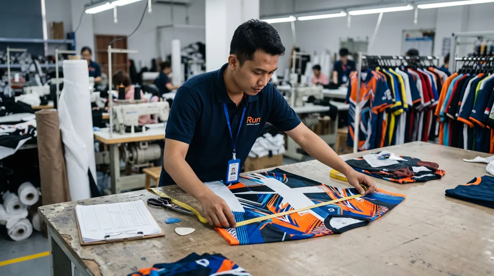

Ukuran yang tepat membantu jersey nyaman digunakan sekaligus mengurangi risiko salah produksi massal. Artikel ini membahas aspek yang perlu diperiksa agar keputusan Anda lebih tepat, baik untuk seragam komunitas, tim olahraga, sekolah, maupun kebutuhan acara.
Dalam memilih layanan jersey printing, sebaiknya pertimbangkan bukan hanya tampilan desain, tetapi juga fungsi bahan, ketepatan ukuran, dan kesiapan data pesanan. Untuk gambaran menyeluruh, baca panduan printing jersey Bandung.
Mulai dari tabel ukuran vendor
Jangan mengasumsikan ukuran M dari satu merek sama dengan ukuran M dari produsen lain. Cocokkan lingkar dada, panjang badan, lebar bahu, dan model potongan dengan tabel yang diberikan.
Untuk memperjelas keputusan sebelum produksi, lihat juga checklist sebelum memesan jersey custom. Informasi tersebut membantu menyesuaikan pilihan dengan kebutuhan tim dan kesiapan pesanan.
Cara mengukur tubuh dan jersey acuan
Gunakan meteran fleksibel dan ukur tanpa menarik terlalu kencang. Membandingkan ukuran jersey yang sudah nyaman dipakai sering membantu, asalkan metode pengukurannya sama.

Jika ingin memeriksa detail yang berkaitan, baca pilihan bahan jersey full printing. Informasi tersebut membantu menyesuaikan pilihan dengan kebutuhan tim dan kesiapan pesanan.
Kumpulkan data satu pintu
Buat daftar nama, nomor, ukuran, dan jumlah per ukuran. Minta penanggung jawab tim memverifikasi data sebelum penguncian pesanan, termasuk ukuran anak atau model khusus bila tersedia.
Sebagai langkah lanjutan yang praktis, gunakan panduan tips desain jersey untuk tim. Informasi tersebut membantu menyesuaikan pilihan dengan kebutuhan tim dan kesiapan pesanan.
Langkah mengukur badan dengan konsisten
Lingkar dada
Gunakan meteran lentur pada bagian dada terlebar tanpa menariknya terlalu kencang. Catat angka aktual dalam sentimeter dan jangan menambahkan kelonggaran secara sembarang.
Panjang badan
Ukur dari titik bahu dekat leher menuju panjang akhir yang diinginkan. Pertimbangkan apakah jersey akan dipakai masuk ke celana atau dibiarkan di luar.
Lebar bahu dan lengan
Periksa titik sambungan bahu serta panjang lengan yang nyaman untuk aktivitas. Untuk model unisex, jangan menganggap ukuran harian dari merek lain otomatis sama.
Mengelola ukuran untuk pesanan satu tim
Bagikan size chart yang sama
Minta setiap anggota memilih berdasarkan tabel ukuran dari produsen yang akan mengerjakan pesanan. Simpan versi tabel yang digunakan agar tidak terjadi perubahan referensi.
Tandai ukuran khusus
Pisahkan permintaan anak, oversized, atau penyesuaian panjang. Jangan menempatkan semua permintaan khusus dalam kolom catatan bebas yang sulit diperiksa.
Konfirmasi daftar final
Buat tabel nama, nomor punggung, ukuran, dan jumlah. Minta penanggung jawab tim memeriksa ejaan serta total per ukuran sebelum file produksi disetujui.
Menghindari salah ukuran
Jangan menebak dari tinggi dan berat
Tinggi dan berat bisa menjadi petunjuk awal, tetapi proporsi tubuh berbeda. Pengukuran langsung dan size chart tetap lebih dapat diandalkan.
Perhatikan toleransi produksi
Produk jahit dapat memiliki toleransi ukuran. Diskusikan rentang toleransi yang diterapkan penyedia jasa, terutama jika tim membutuhkan potongan yang sangat presisi.
Langkah praktis sebelum menentukan pilihan
Gunakan panduan ini sebagai titik awal, lalu sesuaikan dengan aktivitas, anggaran, kebutuhan desain, dan jumlah anggota tim. Jika terdapat spesifikasi khusus, komunikasikan sejak awal agar solusi yang ditawarkan tidak hanya terlihat menarik di gambar tetapi juga sesuai saat digunakan.
Untuk kebutuhan produksi di Bandung, pelajari juga panduan printing jersey Bandung yang menjelaskan pilihan bahan, teknik sublimasi, serta alur pemesanan. Anda juga dapat mengenal layanan jersey printing dari Zipzip dan mendiskusikan detail proyek secara langsung.
Prosedur pengumpulan ukuran satu tim
Bagikan tabel ukuran resmi dari produsen kepada seluruh anggota. Setiap orang sebaiknya mengukur jersey yang paling nyaman dipakai, kemudian membandingkan lebar dada dan panjang baju dengan tabel, bukan hanya memilih ukuran berdasarkan kebiasaan membeli pakaian.
Pisahkan data nama, nomor punggung, ukuran, model lengan, dan catatan khusus dalam satu spreadsheet. Gunakan satu baris per pemesan dan lakukan pengecekan ulang pada nama yang sama atau nomor punggung ganda.
Sebelum file dikirim ke produksi, mintalah koordinator tim mengunci daftar ukuran. Perubahan setelah pola dipotong atau dicetak dapat memengaruhi jadwal dan biaya, sehingga batas waktu revisi perlu disepakati.
Untuk membandingkan pilihan secara menyeluruh, baca panduan printing jersey Bandung dan lihat layanan jersey printing Zipzip.
Mengapa label S M L tidak selalu sama
Ukuran jersey tidak sepenuhnya seragam antarprodusen. Dua produk berlabel L dapat memiliki lebar dada atau panjang badan berbeda karena pola, model fit, dan toleransi produksi. Karena itu, jangan mengandalkan ukuran kaos sehari-hari tanpa memeriksa tabel vendor. Mintalah ukuran produk jadi dalam sentimeter dan, bila tersedia, sampel fisik. Untuk tim yang anggotanya memiliki preferensi berbeda, catat apakah mereka ingin potongan pas badan atau lebih longgar agar keputusan tidak hanya berdasarkan tinggi dan berat.
Mengukur jersey favorit sebagai pembanding
Bentangkan jersey yang nyaman dipakai pada permukaan rata. Ukur lebar dada dari ketiak ke ketiak, panjang badan dari bahu ke bawah, dan lebar bahu jika pola membutuhkannya. Bandingkan angka itu dengan tabel ukuran produk jadi dari vendor, bukan langsung menyamakannya dengan lingkar badan. Catat bahwa bahan elastis dan model potongan dapat memengaruhi rasa pakai. Cara ini membantu pembeli yang tidak sempat mencoba sampel langsung.
Membedakan ukuran tubuh dan ukuran pakaian
Lingkar dada tubuh diukur mengelilingi badan, sedangkan lebar dada jersey datar biasanya diukur satu sisi. Kedua angka tidak boleh dibandingkan tanpa memahami cara pengukurannya. Jersey juga memerlukan kelonggaran agar nyaman bergerak dan bernapas. Kebutuhan kelonggaran berbeda menurut aktivitas dan preferensi. Saat menerima size chart, periksa judul kolom dan satuan ukuran agar tidak terjadi kesalahan dua kali lipat pada lebar atau lingkar.
Ukuran untuk futsal, badminton, dan komunitas
Pemain futsal mungkin mengutamakan ruang gerak bahu dan badan saat berlari, sementara pemain badminton membutuhkan keluwesan ketika mengangkat lengan. Jersey komunitas untuk acara santai bisa dipilih lebih longgar. Perbedaan ini tidak berarti ada satu ukuran baku untuk setiap olahraga, melainkan perlunya mencoba gerakan yang relevan. Jika vendor menyediakan sampel, minta anggota melakukan beberapa gerakan sebelum menetapkan ukuran. Kenyamanan saat berdiri diam belum tentu sama dengan saat bermain.
Mengumpulkan data ukuran satu tim
Gunakan satu tabel dengan kolom nama, nomor, ukuran, model, jumlah, dan catatan khusus. Hindari menerima ukuran lewat percakapan terpisah yang mudah tertukar. Beri batas waktu pengisian, lalu kirim rekap untuk dikonfirmasi semua anggota. Jika ada perubahan setelah daftar dikunci, tandai revisi secara jelas. Untuk pesanan campuran dewasa dan anak, pisahkan tabel ukurannya karena proporsi potongan berbeda. Satu sumber data final akan memudahkan vendor menyiapkan personalisasi.
Memahami toleransi produksi
Produk jahit dapat memiliki variasi ukuran kecil karena proses potong, jahit, dan karakter bahan. Tanyakan toleransi yang berlaku sebelum memesan, terutama jika anggota tim menginginkan ukuran sangat presisi. Jangan menjadikan angka pada tabel sebagai jaminan tanpa toleransi. Untuk desain dengan panel atau kerah khusus, tanyakan apakah model memengaruhi ukuran akhir. Kejelasan ini membantu menghindari sengketa ketika selisih kecil masih berada dalam standar produksi yang disepakati.
Apa yang dilakukan bila ukuran berada di antara dua pilihan
Bandingkan ukuran dada dan panjang badan, bukan hanya satu angka. Pertimbangkan apakah pemakai lebih nyaman dengan fit ramping atau longgar serta apakah jersey digunakan bersama pakaian dalam olahraga. Jika tersedia, coba kedua sampel dan lakukan gerakan aktif. Jangan otomatis naik ukuran tanpa melihat panjang baju; jersey yang terlalu panjang juga bisa mengganggu. Keputusan sebaiknya dibuat oleh pemakai setelah memahami ukuran produk jadi.
Finalisasi ukuran sebelum produksi
Sebelum menyetujui pesanan, cocokkan ukuran dengan nama dan nomor pemain. Pastikan tidak ada baris kosong, duplikasi yang tidak disengaja, atau ukuran yang tertukar. Simpan versi final dan tanggal persetujuan. Jika ukuran menjadi bagian dari desain personal, perubahan setelah proses cetak atau potong bisa sulit dilakukan. Lengkapi langkah ini dengan checklist pemesanan jersey tim agar seluruh data produksi konsisten.
Pertanyaan yang sering muncul
Mengapa label S M L tidak selalu sama?
Ukuran jersey tidak sepenuhnya seragam antarprodusen. Dua produk berlabel L dapat memiliki lebar dada atau panjang badan berbeda karena pola, model fit, dan toleransi produksi.
Mengukur jersey favorit sebagai pembanding?
Bentangkan jersey yang nyaman dipakai pada permukaan rata. Ukur lebar dada dari ketiak ke ketiak, panjang badan dari bahu ke bawah, dan lebar bahu jika pola membutuhkannya.
Membedakan ukuran tubuh dan ukuran pakaian?
Lingkar dada tubuh diukur mengelilingi badan, sedangkan lebar dada jersey datar biasanya diukur satu sisi. Kedua angka tidak boleh dibandingkan tanpa memahami cara pengukurannya.
Artikel terkait yang dapat membantu
- Checklist Persiapan Pesan Jersey Custom untuk Tim dan Komunitas
- Jenis Bahan Jersey Full Printing: Dryfit, Microfiber, dan Interlock
- Custom Jersey Satuan Bandung
Masih ada pertanyaan tentang spesifikasi atau kebutuhan tim? Hubungi Zipzip untuk membahas opsi yang sesuai dengan desain dan jadwal Anda.
Bacaan lanjutan untuk perencanaan jersey
Tahap berikutnya bisa dipelajari melalui panduan yang saling melengkapi berikut.